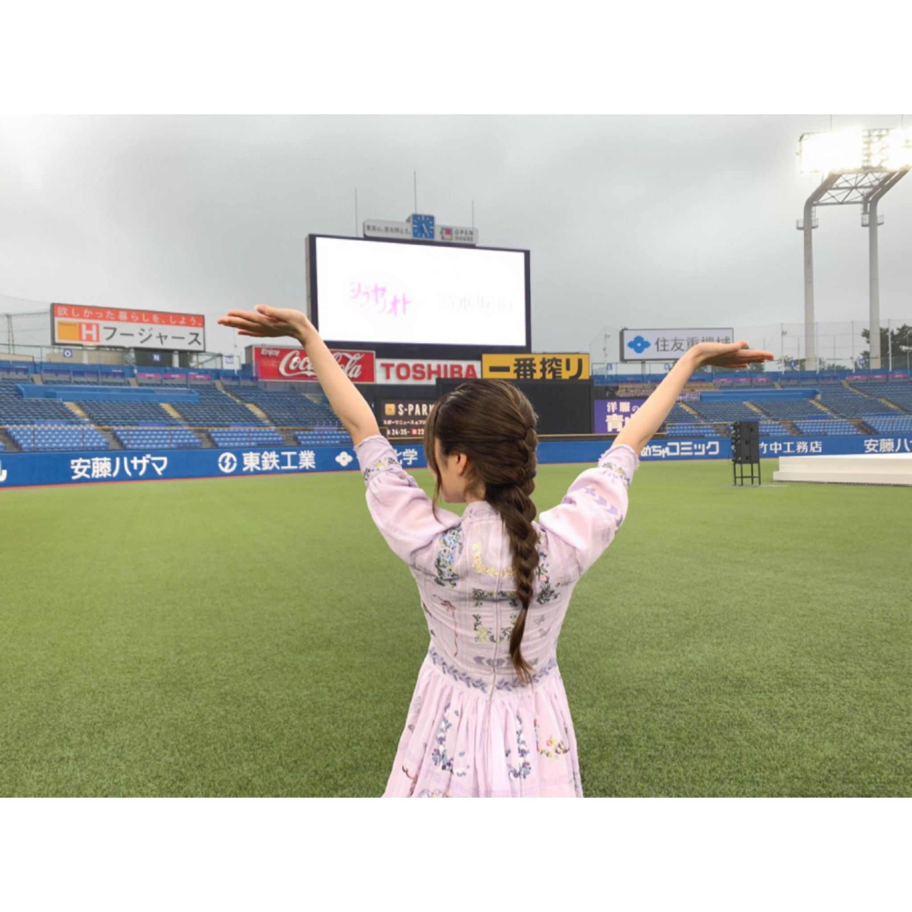

2020/0727Monpants
1回も履いてないパンツのボタンがお洗濯をしたら
何処かへ消えました、、、
割と、形やサイズいいなーって思っていたのに
凄くシンプルなデニムだったのですが
でも、少し寂しい事があったので
次はいい事があると願います！！
プラスに捉えて頑張ります！
ブログの話題にも出来たし良きかな！
タオルで顔辺りをこの様に巻くと落ち着くのですが
そういう方居ませんか？
シブヤノオトありがとうございました。
今年は神宮球場には行けないと思っていて
少し心がモヤモヤとしていたので行けて良かったです。
神宮球場が好きだなーって思えました。
言葉では表せないくらいの思い出が詰まった場所です。
寂しいも
苦しいも
楽しいも
笑顔も涙も
雨が降る中のライブは大変だけど
青春って言葉がぴったりだなって
私に青春という言葉の意味を教えてくれた
理解出来た瞬間が
神宮球場にはあります。
とにかく、思い出がいっぱいの場所に
今年も立ててよかったです。
感謝です。
芝生の上に立つのは初めてでした。
貴重な経験ありがとうございました。

2020/07/27 17:45
コメント(343)
俺も新しいジーパン買わないとだな〜
蘭世ありがとう！
蘭世のブログの感じめっちゃすきです
ずっとすきです。蘭世も好きです。
やばい、バイトに遅れる。
ちゃんとコメントするから待っててね！
蘭世のブログの感じめっちゃすきです
ずっとすきです。蘭世も好きです。
やばい、バイトに遅れる。
ちゃんとコメントするから待っててね！
ブログ投稿ありがとう！
シブヤノオトお疲れ様！凄く感動した！
来年こそはライブできるといいね！
シブヤノオトお疲れ様！凄く感動した！
来年こそはライブできるといいね！
更新ありがとうございます。
今の現状が落ち着いたらかっこいい姿見せてくださいね！
体調にはお気を付けくださいね。
今の現状が落ち着いたらかっこいい姿見せてくださいね！
体調にはお気を付けくださいね。
蘭世ありがとう 滑走路好きだよ！雨でやだね！仕事頑張ってくださいねーまたブログにメール楽しみにしてるからね！
ブログ更新ありがとう。
神宮×蘭世
今年は諦めてたところもあったけど実現していただいて本当にありがたかったです！
いい写真だね〜！！
またね！
神宮×蘭世
今年は諦めてたところもあったけど実現していただいて本当にありがたかったです！
いい写真だね〜！！
またね！
蘭世、ブログ更新ありがとう！！
シブヤノオトリアタイは出来なかったけど、永久保存版の録画を毎日見てます！ 衣装もお気に入りのだし、めちゃくちゃ可愛かったよォォ！
衣装もお気に入りのだし、めちゃくちゃ可愛かったよォォ！
神宮しか勝たんだね！
シブヤノオトリアタイは出来なかったけど、永久保存版の録画を毎日見てます！
神宮しか勝たんだね！
可愛すぎる笑
いつも癒されるー
いつも癒されるー
蘭世ブログありがとう！！
今年は神宮でのツアーが見たかったけどできそうにないよね泣
こういう時に神宮で蘭世が踊ってる姿が見れてほんとに嬉しかったよ！
曲を体現してる蘭世に目を奪われました！
いつも救われてます！
今年は神宮でのツアーが見たかったけどできそうにないよね泣
こういう時に神宮で蘭世が踊ってる姿が見れてほんとに嬉しかったよ！
曲を体現してる蘭世に目を奪われました！
いつも救われてます！
蘭世ちゃん！！！！！！
大好きです。ずっとずっと応援してます！
蘭世ちゃんにいい事が立て続けに起こることを祈ります(-人-)
大好きです。ずっとずっと応援してます！
蘭世ちゃんにいい事が立て続けに起こることを祈ります(-人-)
シブヤノオト見たよー！
世界中の隣人よ感動した♪
蘭世のパフォーマンス見れて嬉しかったよ！！
世界中の隣人よ感動した♪
蘭世のパフォーマンス見れて嬉しかったよ！！
ブログ更新ありがとう！
タオルに包まれと落ち着くの分かります！
個人的には、パーカーのフードとかも結構すきです！
神宮ライブ今年も行きたかった…
早くコロナが過ぎ去ってまた乃木坂のライブに行きたいです！
タオルに包まれと落ち着くの分かります！
個人的には、パーカーのフードとかも結構すきです！
神宮ライブ今年も行きたかった…
早くコロナが過ぎ去ってまた乃木坂のライブに行きたいです！
来年はライブできるといいよね。
タオルで覆うのめっちゃわかるw
蘭世〜ブログ更新ありがとう〜！！！シブヤノオト見たよー！めちゃよかったよー！顔に巻くことは無いけど家では夏でも布団かけてないと落ち着かない。神宮また行きたいな。ライブ行きたいよー！待ってます！！
ブログありがとう☺️
モバメで滑走路とアナスターシャ自分もよく聴くよ！いい曲だよね！
モバメで滑走路とアナスターシャ自分もよく聴くよ！いい曲だよね！
マイナスが有ればプラスが有るさ
今日も美しい
(^o^)
自分はタオルケットを巻くのが好き
今日も美しい
(^o^)
自分はタオルケットを巻くのが好き
ブログ更新ありがとう！
お気に入りの物が壊れてしまうとどうしてもテンションは下がってしまうけれど、必ず次は良いことが起きると信じましょう！
冬は好きですがすごく暑がりなのでゴワゴワした感じ？が苦手です
神宮は行った事がないので勿論行ってみたいのですが
やっぱり今年の夏は少し寂しいですね。
ただ、これもまた次のイベントを期待して前向きに行きます！
大好きです！
そうや
お気に入りの物が壊れてしまうとどうしてもテンションは下がってしまうけれど、必ず次は良いことが起きると信じましょう！
冬は好きですがすごく暑がりなのでゴワゴワした感じ？が苦手です
神宮は行った事がないので勿論行ってみたいのですが
やっぱり今年の夏は少し寂しいですね。
ただ、これもまた次のイベントを期待して前向きに行きます！
大好きです！
そうや
ブログ更新ありがとうまる(笑)
シブヤノオト見ました！
今年も神宮で歌って踊る乃木坂を見れて良かったです
思い返せば自分の初めてのライブも神宮でした
(愛知県民なのに)
曲に勇気を貰うなんて昔では考えられないのに
今は生きる源になってます
本当にありがとう！
タオルに蹲りたくなる気持ちすごいわかる！
自分は毛布派だけど
PS.この前カラオケに行って アナスターシャ その女で
90点以上取りました。
いつもありがとう！
ユースケ
シブヤノオト見ました！
今年も神宮で歌って踊る乃木坂を見れて良かったです
思い返せば自分の初めてのライブも神宮でした
(愛知県民なのに)
曲に勇気を貰うなんて昔では考えられないのに
今は生きる源になってます
本当にありがとう！
タオルに蹲りたくなる気持ちすごいわかる！
自分は毛布派だけど
PS.この前カラオケに行って アナスターシャ その女で
90点以上取りました。
いつもありがとう！
ユースケ
ブログ更新ありがとう！
蘭世さんからのブログ更新や、モバメが自分の励みになり、元気の源です！いつもありがとうね！
シブヤノオトの神宮球場。
ライブの時は観客で埋め尽くされ、一面サイリウムで埋め尽くされてるけどメンバーだけの歌披露もなんか感慨深いなって思いました。
去年までは日常の一部の握手会やライブもなく、日常が非日常になり、それが今は日常になろうとしています。
なんか寂しいな。でもこう言う少ししたツールで元気をもらえたりするから仕事も頑張れるし、次会えるときには自分も成長しなきゃって思うんだよね。
蘭世さんいつもありがとう！
大好きだよ！！
蘭世さんからのブログ更新や、モバメが自分の励みになり、元気の源です！いつもありがとうね！
シブヤノオトの神宮球場。
ライブの時は観客で埋め尽くされ、一面サイリウムで埋め尽くされてるけどメンバーだけの歌披露もなんか感慨深いなって思いました。
去年までは日常の一部の握手会やライブもなく、日常が非日常になり、それが今は日常になろうとしています。
なんか寂しいな。でもこう言う少ししたツールで元気をもらえたりするから仕事も頑張れるし、次会えるときには自分も成長しなきゃって思うんだよね。
蘭世さんいつもありがとう！
大好きだよ！！
ブログ更新ありがとう！
タオル巻くと落ち着くのわかる！！！
自分はフワフワのタオルを巻くのが好きです！
シブヤノオトよかった！！蘭世はちっちゃくてすぐわかったよ！笑
去年の神宮アリーナで蘭世にレス貰えたのが最高に嬉しかった。
はやくライブいきたいなー。
お仕事頑張ってね！！自分もサッカーと勉強頑張ります！！
タオル巻くと落ち着くのわかる！！！
自分はフワフワのタオルを巻くのが好きです！
シブヤノオトよかった！！蘭世はちっちゃくてすぐわかったよ！笑
去年の神宮アリーナで蘭世にレス貰えたのが最高に嬉しかった。
はやくライブいきたいなー。
お仕事頑張ってね！！自分もサッカーと勉強頑張ります！！
蘭世ブログ更新ありがとう！！
買ったばっかりの服にそういうのあると悲しいよね…
自分はなぜか糸ほつれたりしてること多い…
シブヤノオト1期2期がみんな出ててなんとなく安心っていうかうまいことは言えないけど嬉しい気持ちになったよ
早く神宮でライブ観に行きたい！！
蘭世の背中めちゃくちゃ好きです！
大にはきてるから体には気を付けてね〜
買ったばっかりの服にそういうのあると悲しいよね…
自分はなぜか糸ほつれたりしてること多い…
シブヤノオト1期2期がみんな出ててなんとなく安心っていうかうまいことは言えないけど嬉しい気持ちになったよ
早く神宮でライブ観に行きたい！！
蘭世の背中めちゃくちゃ好きです！
大にはきてるから体には気を付けてね〜
更新ありがとう〜！
最近たくさんブログ更新してくれて嬉しい！！
シブヤノオトお疲れ様でした〜
しっかりチェックしたよ
私は高校生ながら特定のタオルがないと未だに寝られない、、
めちゃめちゃ安心してしまう、、笑笑
蘭世はなにか嫌なことあったり落ち込んだ時はどんな過ごし方をしてる？？
今日モヤモヤすることがあって、私いつもすぐ落ち込んじゃうからいつもみたいに落ち込むんじゃなくてなにか他に方法があるんじゃないかって色々考えてみたんだけど
やっぱりなにか自分が集中できるものをやってる時はそれに集中してるから余計なこと考えなくていいな〜とは思ったんだよね！
だけどふとした時に思い出したりして、、笑笑
どうしたらいいんだろうなぁ、、なかなか難しいけど自分の機嫌は自分でとるみたいなことをね、どこかで聞いたからそれ素敵だなって思って意識するように努力してるんだ笑
今日登校中にめちゃめちゃ雨降ってきてほんとびっくりしたよ
次の更新も待ってます
最近たくさんブログ更新してくれて嬉しい！！
シブヤノオトお疲れ様でした〜
しっかりチェックしたよ
私は高校生ながら特定のタオルがないと未だに寝られない、、
めちゃめちゃ安心してしまう、、笑笑
蘭世はなにか嫌なことあったり落ち込んだ時はどんな過ごし方をしてる？？
今日モヤモヤすることがあって、私いつもすぐ落ち込んじゃうからいつもみたいに落ち込むんじゃなくてなにか他に方法があるんじゃないかって色々考えてみたんだけど
やっぱりなにか自分が集中できるものをやってる時はそれに集中してるから余計なこと考えなくていいな〜とは思ったんだよね！
だけどふとした時に思い出したりして、、笑笑
どうしたらいいんだろうなぁ、、なかなか難しいけど自分の機嫌は自分でとるみたいなことをね、どこかで聞いたからそれ素敵だなって思って意識するように努力してるんだ笑
今日登校中にめちゃめちゃ雨降ってきてほんとびっくりしたよ
次の更新も待ってます
蘭世さんブログ更新ありがとうございます！
よくあるよねそういうこと笑
僕もたまにボタン無くなってて焦ります笑
悪いこと起きたらいいことは絶対起きます
プラス思考大事です
タオルそうやって巻いてると落ち着くよね〜分かる笑
シブヤノオト、お疲れ様です
久々に蘭世さんが歌番組に出ているのを見れて良かったです
それも2期生全員出てたのがほんとに嬉しくて
ああ、やっぱり蘭世さんも2期生も大好きだなって改めて思いました
またいつか
神宮で笑顔いっぱいでライブに行ける日を楽しみにしてます
大好きです
ユウキ
よくあるよねそういうこと笑
僕もたまにボタン無くなってて焦ります笑
悪いこと起きたらいいことは絶対起きます
プラス思考大事です
タオルそうやって巻いてると落ち着くよね〜分かる笑
シブヤノオト、お疲れ様です
久々に蘭世さんが歌番組に出ているのを見れて良かったです
それも2期生全員出てたのがほんとに嬉しくて
ああ、やっぱり蘭世さんも2期生も大好きだなって改めて思いました
またいつか
神宮で笑顔いっぱいでライブに行ける日を楽しみにしてます
大好きです
ユウキ
蘭世ブログ更新ありがとう〜(^^)
シブヤノオトで神宮にいる乃木坂ちゃんたちが見れてよかった！
今年は神宮で絶対に見れないと思ってたからめっちゃ嬉しかった！！！
何空と隣人ってところがもっと嬉しかった(^^)
普段ファンがいる芝生側で歌ってる乃木坂ちゃん新鮮だった！！！衣装も可愛くて好き！(^ ^)
モバメでいってたけど、あいらもアナスターシャと滑走路トップ2で好き！でも、ブランコも好き！
タオルが落ち着くのはまじでわかる。
くるまってじーっとするの好き笑笑
いつもブログ更新ありがとう！
8月から夏休みだからそれまで頑張ります！
体には気をつけてね(^^)
だいすきだよ(^^)
あいらぶゆーのあいら。！
シブヤノオトで神宮にいる乃木坂ちゃんたちが見れてよかった！
今年は神宮で絶対に見れないと思ってたからめっちゃ嬉しかった！！！
何空と隣人ってところがもっと嬉しかった(^^)
普段ファンがいる芝生側で歌ってる乃木坂ちゃん新鮮だった！！！衣装も可愛くて好き！(^ ^)
モバメでいってたけど、あいらもアナスターシャと滑走路トップ2で好き！でも、ブランコも好き！
タオルが落ち着くのはまじでわかる。
くるまってじーっとするの好き笑笑
いつもブログ更新ありがとう！
8月から夏休みだからそれまで頑張ります！
体には気をつけてね(^^)
だいすきだよ(^^)
あいらぶゆーのあいら。！
ブログ更新ありがとうございます
シブヤノオトの神宮球場すごく感動しました
やはりこの状況なので今年は出来ないなーと思っていたのでほんとに嬉しかったです。やはり雨が降るんだと思いました。乃木坂だなーと
シブヤノオトの神宮球場すごく感動しました
やはりこの状況なので今年は出来ないなーと思っていたのでほんとに嬉しかったです。やはり雨が降るんだと思いました。乃木坂だなーと
ブログ更新ありがとう！
タオル好きなの分かるう！！
友達にも理解されん勝ったから嬉しい！！
シブヤノオトお疲れ様でした！
神宮には2回しか行ったことないけれど
ステキな場所だよね〜！
オリンピックの後は
改修などもあってあと何回とないだろうけれど
また神宮で歌って踊ってしてる蘭世さんを拝めたら！！と思います！
ステキなパフォーマンスをありがとう！
これから気温が高い時期が続くと思うので
塩分や水分補給は勿論
紫外線対策もしっかりですよ〜！
素敵な夏にしようね、！！
ではではー！また遊びに来ますねー！
タオル好きなの分かるう！！
友達にも理解されん勝ったから嬉しい！！
シブヤノオトお疲れ様でした！
神宮には2回しか行ったことないけれど
ステキな場所だよね〜！
オリンピックの後は
改修などもあってあと何回とないだろうけれど
また神宮で歌って踊ってしてる蘭世さんを拝めたら！！と思います！
ステキなパフォーマンスをありがとう！
これから気温が高い時期が続くと思うので
塩分や水分補給は勿論
紫外線対策もしっかりですよ〜！
素敵な夏にしようね、！！
ではではー！また遊びに来ますねー！
らんぜーー
蘭世さん、こんばんは。
ボタンは流れちゃったのかな。
でも、付けかえれば大丈夫。
ところで、シブヤノオト、観ました。
とっても神々しかった。
乃木坂の歌は天からの声みたいです。
とっても嬉しい。
ボタンは流れちゃったのかな。
でも、付けかえれば大丈夫。
ところで、シブヤノオト、観ました。
とっても神々しかった。
乃木坂の歌は天からの声みたいです。
とっても嬉しい。
らんぜ＼(^o^)／お疲れさまでした
タイトルを見て、らんぜのパンツ姿を見れると思ったけど
まさかのボタンが消えたエピソード(;_;)
あっ、でもタオルの姿を見れて嬉しいよ＼(^o^)／可愛い(*´ω｀*)
シブヤノオトはお疲れさまでした
神宮に立てて良かったよね＼(^o^)／
これからも頑張って(/･ω･)/
タイトルを見て、らんぜのパンツ姿を見れると思ったけど
まさかのボタンが消えたエピソード(;_;)
あっ、でもタオルの姿を見れて嬉しいよ＼(^o^)／可愛い(*´ω｀*)
シブヤノオトはお疲れさまでした
神宮に立てて良かったよね＼(^o^)／
これからも頑張って(/･ω･)/
シブヤノオトとても良かったです！
雨が降ってるのもそれはそれで乃木坂らしくていいなって思いました。
今年も神宮で歌ってる姿が見れて本当に良かったです！
ありがとう。
これからも健康に気をつけて
タオルが落ち着くのなんか分かります。
雨が降ってるのもそれはそれで乃木坂らしくていいなって思いました。
今年も神宮で歌ってる姿が見れて本当に良かったです！
ありがとう。
これからも健康に気をつけて
タオルが落ち着くのなんか分かります。
蘭世、更新ありがとう。
神宮、なんか懐かしささえ感じるね。
最後の写真いいね！
神宮、なんか懐かしささえ感じるね。
最後の写真いいね！
嫌なことが一つあると良いことが二つあるって
教えられました。
近く良いことがあると願ってます。
教えられました。
近く良いことがあると願ってます。
こんにちは、蘭世さん！
神宮はどうでしたか？やっぱり広かったですか？
僕はまだ野球観戦でしか神宮球場に行ったことがありません。
いつか神宮ライブが当たるといいなと思ってます。
こういう時に雨が降るのも乃木坂の聖地たる所以なのかなと思います。
またみんなで神宮に立てるといいですね。
僕は先週体調を少し崩しました。山口市内なのでコロナの可能性がありましたが大丈夫そうです。蘭世さんもお気をつけて！
それでは！
神宮はどうでしたか？やっぱり広かったですか？
僕はまだ野球観戦でしか神宮球場に行ったことがありません。
いつか神宮ライブが当たるといいなと思ってます。
こういう時に雨が降るのも乃木坂の聖地たる所以なのかなと思います。
またみんなで神宮に立てるといいですね。
僕は先週体調を少し崩しました。山口市内なのでコロナの可能性がありましたが大丈夫そうです。蘭世さんもお気をつけて！
それでは！
タオル巻くと落ち着くの分かります！笑
シブヤノオトお疲れさまでした。
テレビ越しでも神宮ライブを観ることができて嬉しかったです！
大変だったと思うけど、雨なのも乃木坂のライブらしいなと思いました笑
神宮はファンにとっても大切な場所です！
本当にありがとうございました(^^)
シブヤノオトお疲れさまでした。
テレビ越しでも神宮ライブを観ることができて嬉しかったです！
大変だったと思うけど、雨なのも乃木坂のライブらしいなと思いました笑
神宮はファンにとっても大切な場所です！
本当にありがとうございました(^^)
ブログ更新ありがとう
良いことがあったらマイナスなこともあって上手くバランス取れるようになってるんだなと実感してる真っ只中でございます
きっとこのあといい事があるよ
蘭世はタオルのみならずパーカーとか着てる時によくそうしてるイメージあるな
テレビでちゃんとパフォーマンス見ましたよ
素敵なパフォーマンスをありがとう
やっぱり神宮でライブ見たいし神宮の雨でビトビトにならないと夏じゃないなとも思いました
神宮の映像では雨降ってたし最近雨も多いので湿気に負けずに雨も楽しんだもん勝ちです
夏バテしないようにしっかり食べてしっかり寝てください
いつもありがとう
良いことがあったらマイナスなこともあって上手くバランス取れるようになってるんだなと実感してる真っ只中でございます
きっとこのあといい事があるよ
蘭世はタオルのみならずパーカーとか着てる時によくそうしてるイメージあるな
テレビでちゃんとパフォーマンス見ましたよ
素敵なパフォーマンスをありがとう
やっぱり神宮でライブ見たいし神宮の雨でビトビトにならないと夏じゃないなとも思いました
神宮の映像では雨降ってたし最近雨も多いので湿気に負けずに雨も楽しんだもん勝ちです
夏バテしないようにしっかり食べてしっかり寝てください
いつもありがとう
蘭世ちゃん、ブログ更新ありがとう！
デニムって履く前に洗うんですね
知りませんでした…
シブヤノオトお疲れ様でした！
神宮でのパフォーマンスは乃木坂らしさを感じ取れて最高でした
またの更新楽しみにしていますね
デニムって履く前に洗うんですね
知りませんでした…
シブヤノオトお疲れ様でした！
神宮でのパフォーマンスは乃木坂らしさを感じ取れて最高でした
またの更新楽しみにしていますね
誕生日に蘭世さんのブログ更新は嬉しすぎ！
ブログ更新ありがとうございます～！
細かいブログ更新もたまには良きかもですね！
まあ蘭世さんが上げたいと思った時が1番嬉しいです！！
残念ですね…でもプラスに捉える！ポジティブに行った方が物事もよく進むって言いますからねいい事あるといいですね！
タオル分かります～なんか巻かれてると良きですよね
それにしてもタオルも似合ってしまう蘭世さん、さすがです、というか周りを包んで隠してるからなのかいつもより顔が映えて良きです！
シブヤノオトお疲れ様でした！
毎年恒例とはいえ今年はライブ会場という感じではなかったですが、芝生も貴重な体験で良かったですね！自分も神宮でライブやってる姿が見れて嬉しかったです！！あと1期2期が尊すぎます。なかなか音楽番組でも全員っていうのはなかったので、こーいう機会に見れて本当に最高でした。
また来年、神宮にいってコールしたいです。早く収束するといいですね
モバメとかに関してはまた後で書きますね！
一旦今回の1曲！
RADIOFISHさんで「進化論」！
RADIOFISHさんはどの曲でも結局中田さんを称える曲になってしまい、これもそのうちの1曲なのですが、進化がテーマなので、前に進んでいこうと言う感じが全面に出た曲で面白い感じもありますが、それ以上にかっこよさもあり藤森さんのラップが凄いので、ぜひ！
ではまたコメントします！！
黒T
細かいブログ更新もたまには良きかもですね！
まあ蘭世さんが上げたいと思った時が1番嬉しいです！！
残念ですね…でもプラスに捉える！ポジティブに行った方が物事もよく進むって言いますからねいい事あるといいですね！
タオル分かります～なんか巻かれてると良きですよね
それにしてもタオルも似合ってしまう蘭世さん、さすがです、というか周りを包んで隠してるからなのかいつもより顔が映えて良きです！
シブヤノオトお疲れ様でした！
毎年恒例とはいえ今年はライブ会場という感じではなかったですが、芝生も貴重な体験で良かったですね！自分も神宮でライブやってる姿が見れて嬉しかったです！！あと1期2期が尊すぎます。なかなか音楽番組でも全員っていうのはなかったので、こーいう機会に見れて本当に最高でした。
また来年、神宮にいってコールしたいです。早く収束するといいですね
モバメとかに関してはまた後で書きますね！
一旦今回の1曲！
RADIOFISHさんで「進化論」！
RADIOFISHさんはどの曲でも結局中田さんを称える曲になってしまい、これもそのうちの1曲なのですが、進化がテーマなので、前に進んでいこうと言う感じが全面に出た曲で面白い感じもありますが、それ以上にかっこよさもあり藤森さんのラップが凄いので、ぜひ！
ではまたコメントします！！
黒T
蘭世さんブログ更新ありがとう！！
あら、、それは残念やね、だけどプラスに捉えられてるなら良きや！！
蘭世さん、何やっても可愛いねほんと、可愛い写真ありがとうございますね
シブヤノオトこちらこそありがとうございました！！神宮で乃木坂が踊ってる姿を久しぶりに見れて良かったです！
まだ神宮は行ったことないからいつか行けたらいいなぁ
何気ない1日を大切にして行けたらいいですね
ではまたコメントしますね
いつもありがとうございます、これからも宜しくお願いします、大好きです！！
UY
あら、、それは残念やね、だけどプラスに捉えられてるなら良きや！！
蘭世さん、何やっても可愛いねほんと、可愛い写真ありがとうございますね
シブヤノオトこちらこそありがとうございました！！神宮で乃木坂が踊ってる姿を久しぶりに見れて良かったです！
まだ神宮は行ったことないからいつか行けたらいいなぁ
何気ない1日を大切にして行けたらいいですね
ではまたコメントしますね
いつもありがとうございます、これからも宜しくお願いします、大好きです！！
UY
ブログ更新ありがとう！！
タオルで顔の辺りにやると落ち着くのすごいわかる！！
早く握手会に行きたいな、またブログ更新されるの待ってるね！
タオルで顔の辺りにやると落ち着くのすごいわかる！！
早く握手会に行きたいな、またブログ更新されるの待ってるね！
ブログ更新ありがとう☺︎
1回も履いてないのに、、、それはショックですね(o_o)
どんなパンツだったのか気になる、、
プラスに捉える蘭世ちゃんさすがです！
写真めっちゃ可愛いです♡
赤ちゃん帰り的な？ちょっと分かる気もします。
シブヤノオト、すごく良かったよ〜
大切な場所に立つことができて良かったね☺️
早く神宮で直接会える日が来ることを願っています。
それまでは画面越しかもしれないけど、蘭世ちゃんの活躍を沢山観れますように！
最後の写真の髪型、すごく好き☺️
1回も履いてないのに、、、それはショックですね(o_o)
どんなパンツだったのか気になる、、
プラスに捉える蘭世ちゃんさすがです！
写真めっちゃ可愛いです♡
赤ちゃん帰り的な？ちょっと分かる気もします。
シブヤノオト、すごく良かったよ〜
大切な場所に立つことができて良かったね☺️
早く神宮で直接会える日が来ることを願っています。
それまでは画面越しかもしれないけど、蘭世ちゃんの活躍を沢山観れますように！
最後の写真の髪型、すごく好き☺️
蘭世ちゃんブログ更新ありがと:-)
タオルで顔の辺り巻くと落ち着くのなんとなくわかります
先日のシブヤノオト見ました～～～
毎年神宮でやってるのでやっぱり神宮には特別感があったので番組でも神宮に立っている蘭世を見れて幸せでした～～～
タオルで顔の辺り巻くと落ち着くのなんとなくわかります
先日のシブヤノオト見ました～～～
毎年神宮でやってるのでやっぱり神宮には特別感があったので番組でも神宮に立っている蘭世を見れて幸せでした～～～
ブログ更新ありがとう！
シブヤノオト観ました
やっぱり乃木坂の夏といえば神宮球場だなと改めて思いました。またライブやイベントができるようになった時、神宮でライブができると良いですね。雨が降ってきたのも乃木坂らしくてよかったです。
寺田さんの写真の撮り方が好きです
いつか写真集出してみたいとか思ったりしますか？
その時は絶対に買います
まだまだ体調には気をつけてください。
シブヤノオト観ました
やっぱり乃木坂の夏といえば神宮球場だなと改めて思いました。またライブやイベントができるようになった時、神宮でライブができると良いですね。雨が降ってきたのも乃木坂らしくてよかったです。
寺田さんの写真の撮り方が好きです
いつか写真集出してみたいとか思ったりしますか？
その時は絶対に買います
まだまだ体調には気をつけてください。
ブログ更新ありがとうございます！
こうして定期的に頻度をあげて
ブログを更新してくれること
ファンとしてはとても嬉しいです。
シブヤノオトお疲れ様でした。
蘭世さんは神宮球場に
立てたことを嬉しく思うけど
我々は蘭世さんが神宮球場に
立ってくれたことが
ほんとに嬉しかった。
モバメでファンの我々に
蘭世さんが出てない事で
不安にさせていないかって
気にしてたようだから
余計に嬉しかったです！
本当にありがとう。
直接会えない日々が続くけど
こうして歌番組やその他のメディアで
蘭世さんを見れることは
本当に嬉しいことです。
数なんて関係ないんです。
蘭世さんが頑張ってる姿を見れば
自分たちも頑張ろうって思えるし
蘭世さんの気持ちは
離れてても伝わってますよ！
またよろしくね。
楽しみにしてます！
shun
こうして定期的に頻度をあげて
ブログを更新してくれること
ファンとしてはとても嬉しいです。
シブヤノオトお疲れ様でした。
蘭世さんは神宮球場に
立てたことを嬉しく思うけど
我々は蘭世さんが神宮球場に
立ってくれたことが
ほんとに嬉しかった。
モバメでファンの我々に
蘭世さんが出てない事で
不安にさせていないかって
気にしてたようだから
余計に嬉しかったです！
本当にありがとう。
直接会えない日々が続くけど
こうして歌番組やその他のメディアで
蘭世さんを見れることは
本当に嬉しいことです。
数なんて関係ないんです。
蘭世さんが頑張ってる姿を見れば
自分たちも頑張ろうって思えるし
蘭世さんの気持ちは
離れてても伝わってますよ！
またよろしくね。
楽しみにしてます！
shun
シブヤノオト観ました！！
めっちゃ可愛いかったです！！
めっちゃ可愛いかったです！！
今日で白米様4年目なんだね！おめでとう！！
蘭世ブログ更新ありがとう！
そうだね〜〜、残念だけれど次は良いことが起きるって信じていこう！！
タオル巻いてる蘭世可愛い〜〜！！
そうだね
神宮に今年も立つとはファンとしても思ってなかったから、
蘭世が立っている姿を見てとても嬉しかったよ
蘭世の青春が感じられる日、神宮のステージに立つ日が
また来ますように
体調には気を付けてね
人として大好きです
そうだね〜〜、残念だけれど次は良いことが起きるって信じていこう！！
タオル巻いてる蘭世可愛い〜〜！！
そうだね
神宮に今年も立つとはファンとしても思ってなかったから、
蘭世が立っている姿を見てとても嬉しかったよ
蘭世の青春が感じられる日、神宮のステージに立つ日が
また来ますように
体調には気を付けてね
人として大好きです
こんばんは 寺田さん
寺田さん
ブログ更新お疲れ様m(__)m
乃木坂46＋神宮球場＝雨
おやすみおな 寺田さん
寺田さん
良い夢を
また明日
ブログ更新お疲れ様m(__)m
乃木坂46＋神宮球場＝雨
おやすみおな
良い夢を
また明日


かわいすぎる！